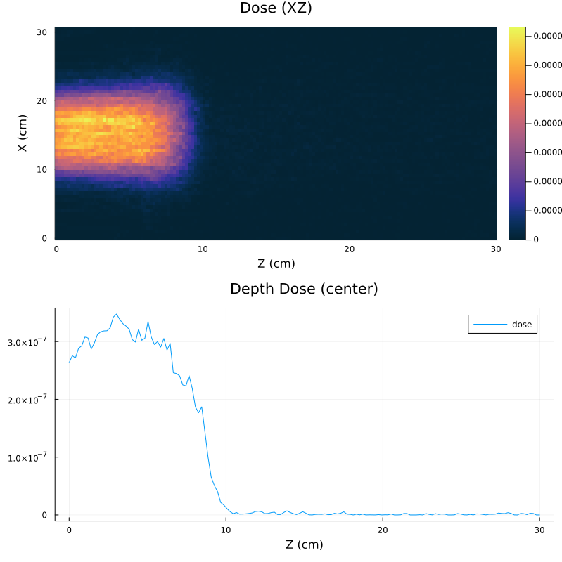
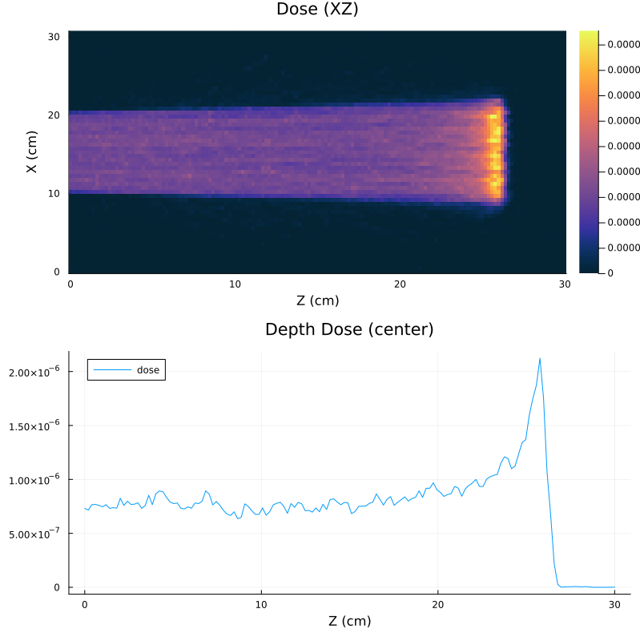
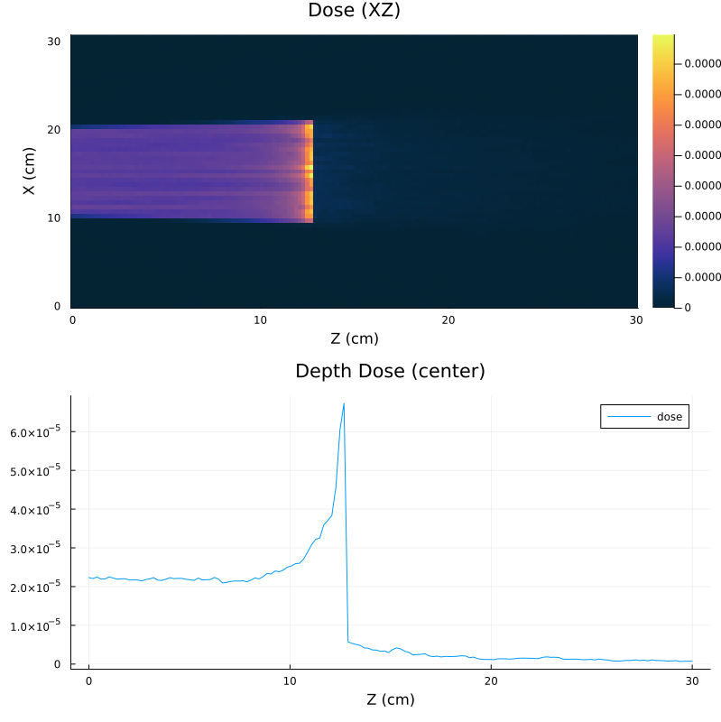

Water Phantom with Scoring
You can also download this example as a Jupyter notebook and a plain Julia source file.
Example originated from the example in Geant4Py. It is using a very simple phantom model (a box of water) and exercises the scoring interface.
using Geant4
using Geant4.SystemOfUnits
using Plots
import DisplayAs: PNGDetector description
The main parameters are stored in the RE03Detector struct with some default values.
mutable struct RE03Detector <: G4JLDetector
const worldXY::Float64
const worldZ::Float64
const phantomXY::Float64
const phantomZ::Float64
RE03Detector(;worldXY=100cm, worldZ=300cm, phantomXY=30.5cm, phantomZ=30cm) = new(worldXY, worldZ, phantomXY, phantomZ)
end
function construct(det::RE03Detector)::CxxPtr{G4VPhysicalVolume}
##---Materials----------------------------------------------------------------------------------
nist = G4NistManager!Instance()
fAir = FindOrBuildMaterial(nist, "G4_AIR")
fWater = FindOrBuildMaterial(nist, "G4_WATER")
##---World--------------------------------------------------------------------------------------
worldSolid = G4Box("World",det.worldXY/2, det.worldXY/2, det.worldZ/2)
worldLogical = G4LogicalVolume(worldSolid,fAir,"World")
worldPhys = G4PVPlacement(nothing, G4ThreeVector(), worldLogical, "World", nothing,false,0)
##---Phantom------------------------------------------------------------------------------------
phantomSolid = G4Box("Phantom", det.phantomXY/2, det.phantomXY/2, det.phantomZ/2)
phantomLogical = G4LogicalVolume(phantomSolid, fWater, "Phantom");
phantomPhys = G4PVPlacement(nothing, G4ThreeVector(), phantomLogical, "Phantom", worldLogical, false, 0)
##---Visualization attributes-------------------------------------------------------------------
SetVisAttributes(worldLogical, G4VisAttributes!GetInvisible())
simpleBoxVisAtt = G4VisAttributes(G4Colour(1.0, 1.0, 1.0))
SetVisibility(simpleBoxVisAtt, true)
SetVisAttributes(phantomLogical, simpleBoxVisAtt)
return worldPhys
end
Geant4.getConstructor(::RE03Detector)::Function = constructDefine the primary particle generator
We define the MedicalBeam particle generator. This is similar to the particle gun but with direction of the particles randomly distributed within some aperture cone. It consists of
MedicalBeamDatadata structure with the parameters of the beam- An
initfunction that will be called at initialization time. - An
generatefunction hat is called at each event and create the primary particle and primary vertex. - A set of setter functions (
SetParticleByName,SetParticleEnergy) to change parameters at run time
The function to construct the generator is MedicalBeam(...).
mutable struct MedicalBeamData <: G4JLGeneratorData
particleName::String
particlePtr::CxxPtr{G4ParticleDefinition}
energy::Float64
ssd::Float64
fieldXY::Float64
surfaceZ::Float64
end
function generateBeamDir(ssd::Float64, fxy::Float64)
dr = √2/2*fxy
R = √(ssd^2 + dr^2)
cos0 = ssd/R
xymax = fxy/ssd/2
dx = dy = dz = 0.
while true
dz = rand()*(1-cos0)+ cos0
dsin = √(1-dz^2)
dphi = rand()*2π
dx = dsin * cos(dphi)
dy = dsin * sin(dphi)
if abs(dx) < xymax*dz && abs(dy) < xymax*dz
break
end
end
G4ThreeVector(dx, dy, dz)
end
function MedicalBeam(;particle="e-", energy=10MeV, ssd=100cm, fieldXY=10cm)
data = MedicalBeamData(particle, CxxPtr{G4ParticleDefinition}(C_NULL), energy, ssd, fieldXY, 0.)
function init(data::MedicalBeamData, app::G4JLApplication)
data.particlePtr = FindParticle(data.particleName)
data.surfaceZ = -app.detector.phantomZ/2
end
function generate( evt::G4Event, data::MedicalBeamData)::Nothing
mass = data.particlePtr |> GetPDGMass
momemtum = √((mass + data.energy)^2 - mass^2)
pvec = momemtum * generateBeamDir(data.ssd, data.fieldXY);
primary = G4PrimaryParticle(data.particlePtr, pvec |> x, pvec |> y, pvec |> z )
vertex = G4PrimaryVertex(G4ThreeVector(0, 0, data.surfaceZ - data.ssd), 0ns)
SetPrimary(vertex, move!(primary)) # note that we give up ownership of the objects just created
AddPrimaryVertex(evt, move!(vertex)) # note that we give up ownership of the objects just created
end
G4JLPrimaryGenerator("MedicalBeam", data; init_method=init, generate_method=generate)
end
function SetParticleByName(gen::G4JLPrimaryGenerator{MedicalBeamData}, particle::String)
gen.data.particleName = particle
gen.data.particlePtr = FindParticle(particle)
return
end
function SetParticleEnergy(gen::G4JLPrimaryGenerator{MedicalBeamData}, energy::Float64)
gen.data.energy = energy
return
end;Setup the scoring with the the scoring interface
Create a box shaped mesh and define the number of bins. The quantity to be monitor is dose. Later accessing the attribute dose on the scoring mesh will return a tuple with the sum of dose, sum square and number of entries for each mesh cell.
sc1 = G4JLScoringMesh("boxMesh_1",
BoxMesh(15.25cm, 15.25cm, 15cm),
bins = (61, 61, 150),
quantities = [ doseDeposit("dose") ]
);Create the Application
app = G4JLApplication(;detector = RE03Detector(), # detector with parameters
generator = MedicalBeam(), # promary partcile generator
nthreads = 8, # define the number of threads
physics_type = FTFP_BERT, # what physics list to instantiate
scorers = [sc1] # list of scorers
);
**************************************************************
Geant4 version Name: geant4-11-02-patch-01 [MT] (16-February-2024)
<< in Multi-threaded mode >>
Copyright : Geant4 Collaboration
References : NIM A 506 (2003), 250-303
: IEEE-TNS 53 (2006), 270-278
: NIM A 835 (2016), 186-225
WWW : http://geant4.org/
**************************************************************
Configure, Initialize and Run
configure(app)
initialize(app)
beamOn(app, 0)--- G4CoupledTransportation is used
.... G4ScoringMessenger::MeshBinCommand - G4ScoringBox
G4ScoringManager has 1 scoring meshes.
G4ScoringBox : boxMesh_1 --- Shape: Box mesh
Size (x, y, z): (15.25, 15.25, 15) [cm]
# of segments: (61, 61, 150)
displacement: (0, 0, 0) [cm]
registered primitve scorers :
0 dose
G4WT2 > .... G4ScoringMessenger::MeshBinCommand - G4ScoringBox
G4WT6 > .... G4ScoringMessenger::MeshBinCommand - G4ScoringBox
G4WT4 > .... G4ScoringMessenger::MeshBinCommand - G4ScoringBox
G4WT2 > G4ScoringManager has 1 scoring meshes.
G4WT2 > G4ScoringBox : boxMesh_1 --- Shape: Box mesh
G4WT6 > G4ScoringManager has 1 scoring meshes.
G4WT4 > G4ScoringManager has 1 scoring meshes.
G4WT4 > G4ScoringBox : boxMesh_1 --- Shape: Box mesh
G4WT4 > Size (x, y, z): (15.25, 15.25, 15) [cm]
G4WT2 > Size (x, y, z): (15.25, 15.25, 15) [cm]
G4WT4 > # of segments: (61, 61, 150)
G4WT7 > .... G4ScoringMessenger::MeshBinCommand - G4ScoringBox
G4WT3 > .... G4ScoringMessenger::MeshBinCommand - G4ScoringBox
G4WT4 > displacement: (0, 0, 0) [cm]
G4WT4 > registered primitve scorers :
G4WT4 > 0 dose
G4WT5 > .... G4ScoringMessenger::MeshBinCommand - G4ScoringBox
G4WT3 > G4ScoringManager has 1 scoring meshes.
G4WT3 > G4ScoringBox : boxMesh_1 --- Shape: Box mesh
G4WT3 > Size (x, y, z): (15.25, 15.25, 15) [cm]
G4WT3 > # of segments: (61, 61, 150)
G4WT3 > displacement: (0, 0, 0) [cm]
G4WT7 > G4ScoringManager has 1 scoring meshes.
G4WT7 > G4ScoringBox : boxMesh_1 --- Shape: Box mesh
G4WT3 > registered primitve scorers :
G4WT7 > Size (x, y, z): (15.25, 15.25, 15) [cm]
G4WT7 > # of segments: (61, 61, 150)
G4WT7 > displacement: (0, 0, 0) [cm]
G4WT7 > registered primitve scorers :
G4WT7 > 0 dose
G4WT5 > G4ScoringManager has 1 scoring meshes.
G4WT0 > .... G4ScoringMessenger::MeshBinCommand - G4ScoringBox
G4WT0 > G4ScoringManager has 1 scoring meshes.
G4WT0 > G4ScoringBox : boxMesh_1 --- Shape: Box mesh
G4WT0 > Size (x, y, z): (15.25, 15.25, 15) [cm]
G4WT3 > 0 dose
G4WT0 > # of segments: (61, 61, 150)
G4WT0 > displacement: (0, 0, 0) [cm]
G4WT0 > registered primitve scorers :
G4WT0 > 0 dose
G4WT6 > G4ScoringBox : boxMesh_1 --- Shape: Box mesh
G4WT6 > Size (x, y, z): (15.25, 15.25, 15) [cm]
G4WT6 > # of segments: (61, 61, 150)
G4WT6 > displacement: (0, 0, 0) [cm]
G4WT6 > registered primitve scorers :
G4WT6 > 0 dose
G4WT2 > # of segments: (61, 61, 150)
G4WT2 > displacement: (0, 0, 0) [cm]
G4WT2 > registered primitve scorers :
G4WT2 > 0 dose
G4WT1 > .... G4ScoringMessenger::MeshBinCommand - G4ScoringBox
G4WT5 > G4ScoringBox : boxMesh_1 --- Shape: Box mesh
G4WT1 > G4ScoringManager has 1 scoring meshes.
G4WT1 > G4ScoringBox : boxMesh_1 --- Shape: Box mesh
G4WT5 > Size (x, y, z): (15.25, 15.25, 15) [cm]
G4WT5 > # of segments: (61, 61, 150)
G4WT5 > displacement: (0, 0, 0) [cm]
G4WT5 > registered primitve scorers :
G4WT1 > Size (x, y, z): (15.25, 15.25, 15) [cm]
G4WT5 > 0 dose
G4WT1 > # of segments: (61, 61, 150)
G4WT1 > displacement: (0, 0, 0) [cm]
G4WT1 > registered primitve scorers :
G4WT1 > 0 dose
Define plotting functions
function do_plots(sc)
dose, dose2, nentry = sc.dose
xaxisvalues = range(0., sc.mesh.dx*2/cm, sc.bins[1])
zaxisvalues = range(0., sc.mesh.dz*2/cm, sc.bins[3])
cbin = round(Int, (sc.bins[1]+1)/2)
fig = plot( layout=(2,1), size=(800,800),
heatmap(zaxisvalues, xaxisvalues, dose[cbin,:,:], title="Dose (XZ)", color=:thermal, xlabel="Z (cm)", ylabel="X (cm)"),
plot(zaxisvalues, dose[cbin,cbin,:], title="Depth Dose (center)", xlabel="Z (cm)", label="dose")
)
enddo_plots (generic function with 1 method)Electron 20 Mev
SetParticleByName(app.generator, "e-")
SetParticleEnergy(app.generator, 20MeV)
beamOn(app, 100000)
do_plots(sc1)
Proton 200 MeV
SetParticleByName(app.generator, "proton")
SetParticleEnergy(app.generator, 200MeV)
beamOn(app, 100000)
do_plots(sc1)
C<sub>12</sub> ion 3 GeV
SetParticleByName(app.generator, "C12")
SetParticleEnergy(app.generator, 3GeV)
beamOn(app, 100000)
do_plots(sc1)
This page was generated using Literate.jl.